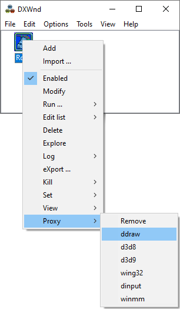

You must be aware that it is not always possible to replicate the effect of the DxWnd hooks with the proxy method because
of the differences in capabilities, sequence of operations, etc., so the success of this operation is not guaranteed.
You must be aware that it is not always possible to replicate the effect of the DxWnd hooks with the proxy method because
of the differences in capabilities, sequence of operations, etc., so the success of this operation is not guaranteed.
DxWnd can be configured to run in a proxy mode following these steps:
First, you must configure your application in DxWnd as needed. Also, you must have set DxWnd to run in Expert mode to see the proxy options. (Options > Expert mode)
After
the game has been configured, right-click the game entry in the DxWnd
main window and select the “Proxy” option and click the
appropriate proxy (DLL) to install into the game folder. ddraw is
usually enough for most games, newer games may need d3d8 or d3d9 DLLs.
There are also the more universal dinput and winmm proxy files that
can be used if the other methods fail. And finally, wing32 for those games
that use the WinG32 libraries.
You must be aware that it is not always possible to replicate the effect of the DxWnd hooks with the proxy method because
of the differences in capabilities, sequence of operations, etc., so the success of this operation is not guaranteed.

Note that you can also remove any existing proxy files from the game folder using the “Remove” option.
Some extra things to note when setting up the proxy:
If your DxWnd configuration needs the “Handle Exceptions” flag, then you must also manually copy the "Disasm.dll" into the game folder.
If you have enabled Virtual CD Audio, you will need to manually copy the following extra files into the game folder: "libogg.dll", "libvorbis.dll", "libvorbisfile.dll", "dxwplay.dll".
Similarly, you may need to copy other DLL files from the DxWnd folder to the game folder depending on which extra flags you have enabled. ("filter.dll", "SDL.dll", etc..)
After the proxy files have been installed (and possibly some files copied manually), you should close DxWnd. The game should now run independently in a portable proxy mode when ever you start the game from its executable.
Troubleshooting:
In theory, it should not matter where the game is installed in proxy mode and the path should be ignored. But in practice, sometimes the "dxwnd.dxw" file which contains the proxy configuration may need to be manually edited for the proxy mode to be portable on different install directories.
You can open "dxwnd.dxw" with notepad and look for the line “path0=C:\gamedir\game.exe”. This path may need to be edited into a blank “path0=” or “path0=*\game.exe” form.
A portable DxWnd setup without the use of proxy files is also possible. In this case, we will not be using the "Proxy" menu to install the proxy files. Instead in this case, DxWnd files are placed directly into the game folder. For the simplest setup, you would only need "dxwnd.exe" and "dxwnd.dll" files in the game directory. However, depending on the features needed, more files may need to be included. To run this kind of “poor mans proxy” setup, you can create a shortcut of the "dxwnd.exe" in your game directory and then edit that shortcut to include the following lines in the target path:
C:\gamedir\dxwnd.exe /Q /R:1
You can then also change the icon for the shortcut to be that of the game executable. The /Q switch starts DxWnd quietly in the system tray and the /R:1 switch runs the first (and only) game configured in DxWnd. It should also automatically close DxWnd when the game terminates.
Why would you use this method?
- The normal proxy/wrapper files may not always be loaded depending on various things like system settings, enabled ACT shims or just random Windows weirdness.